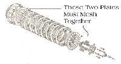
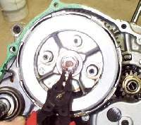
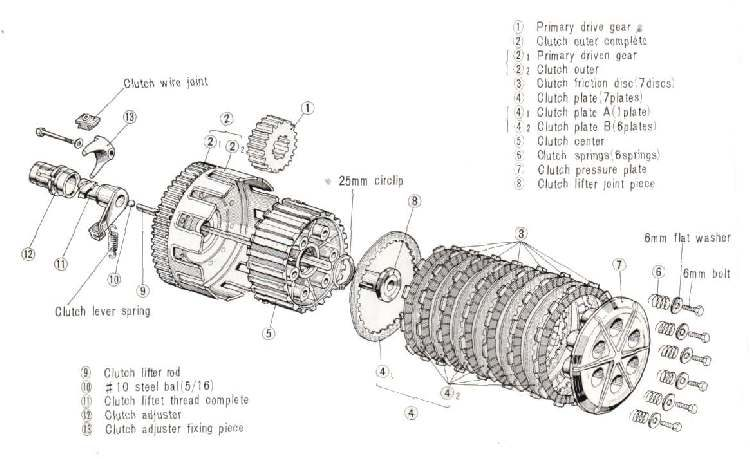

The clutch springs press the plates together so the clutch grips. Most bikes have several coil springs held by bolts or nuts on the pressure plate. Some bikes use one large spring (or a diaphragm spring) held by a big circlip.
What it does
The springs set how hard the plates clamp. The clutch lever works against them: pulling the lever pushes the pressure plate back so the plates part. If the springs are weak, the clutch slips. If they are too strong or the wrong type, the lever is heavy.
Signs it is worn or failing
- Clutch slips under load, in higher gears, with revs rising but the bike not pulling, even after the cable has free play.
- Heavy lever after non-standard springs were fitted.
- Uneven spring height, or one spring shorter than the others.
When to replace it
The course notes that as plates wear thin the spring pressure falls, and that springs lose strength with age. Compare the free length of each spring with the limit in your bike's manual. Replace the whole set if any spring is short. Fitting new plates with tired springs gives only a short-lived fix. Never replace only one spring.
What to match when buying
- Engine model and year. Spring length, wire thickness and number of coils differ between engines.
- Buy a full matched set, with new spring bolts or nuts if the old ones are stretched or damaged.
- For single-spring clutches, match the spring and the circlip together.
Fitting notes
- Loosen and tighten the bolts a little at a time in a cross pattern so the pressure plate stays flat.
- The plate that carries the springs must mesh with the basket. Some have arrows that must line up.
- Single heavy springs held by a large circlip need a special tool. Do not pry a loaded spring free by hand.
- After assembly, set the clutch free play. See Adjust clutch lever free play.
- Full job: Inspect and replace clutch plates and springs.